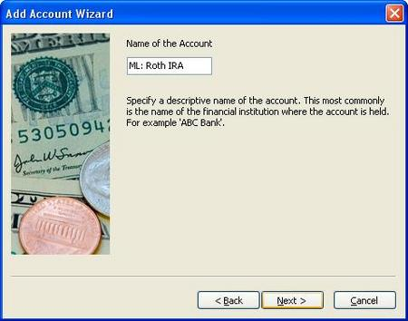
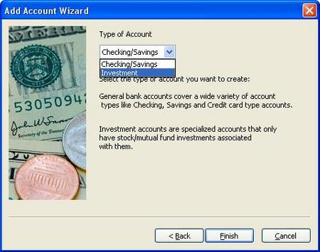
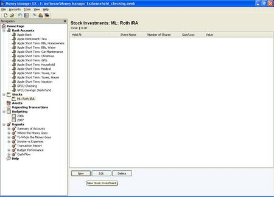
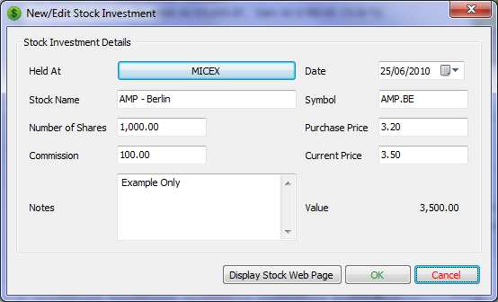
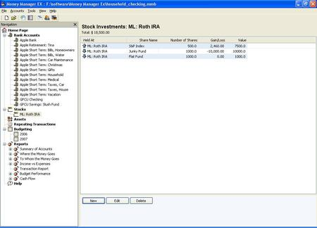
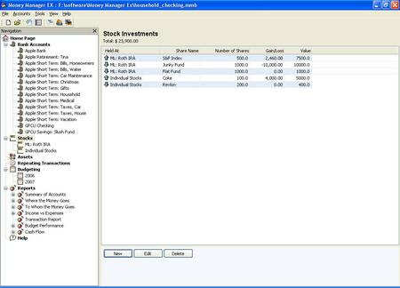

This is the opening 'Home Screen' for MMEX. As you can see, it shows an overview of current account balances and income/expenses for the month. To start tracking investments, you first have to create an 'investment account'.

These are the simple screens you use to set up an account.




Once you finish, you're taken back to the 'Home Screen'. Notice that the new
investment account 'ML: Roth IRA' shows under 'Stocks' on the left-hand nav bar.
When you click on an account, you are taken to the account page. For
checking/savings, this is where you view and enter transactions. For an
investment account, it's where you view and edit holdings.

When you click 'New' you get a pop-up box to enter holding information.

And this is what your holding/s will look like in the account screen.

If you click 'Stocks' on the left-hand nav bar, you'll see an overview of all
your investment account holdings.

And the 'Home Screen' will reflect the value of your stock holdings.